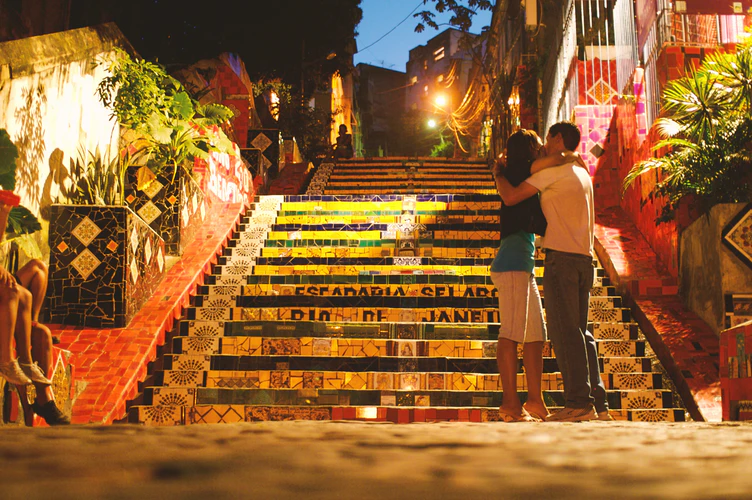

Rio de Janeiro
Spend a day experiencing the natural beauties of Rio on an all inclusive boat tour. After pickup at your hotel, travel to a marina and embark on a motorboat to cruise up open waters sailing around.
Explorerio turism
Spend a day experiencing the natural beauties of Rio on an all inclusive boat tour. After pickup at your hotel, travel to a marina and embark on a motorboat to cruise up open waters sailing around.
Explore
There is no doubt that Rio de Janeiro is one of the top travel destinations in the world and a year-round tourist hub, but have you ever wondered why most tourists are so intoxicated with the dream to visit Rio de Janeiro at least once in a lifetime?
Well, because this ocean-cradling and mountain-spiked city is a place that offers a mixture of contrasting experiences both for adventurous travelers and luxury vacation lovers. Now let’s take a dive into those special experiences and spots making Rio appear on everyone’s bucket list.
Rio de Janeiro is full of colorful places that will make your eyes turn, and a perfect destination like that is the vivid mosaic Stairs of Selarón - a magical spot in the middle of a metropole. The stairs are the beautiful work of Chilean-born artist Jorge Selarón, who saw the project as his tribute to the city and the Brazilian people. He completely transformed the neighborhood turning it from a gray abandoned area into a creative hub for tourists.
The next destination you don’t want to miss throughout your journey in Rio is the statue of Christ the Redeemer — one of the New Seven Wonders of the World, overlooking the city from the 2,330-foot high Corcovado mountain. To see this breathtaking panoramic view across Rio, you can choose the way closer to your traveling style — take a train through the forest, hike, or take a van to the top.
Nothing defines Rio better than the rhythms of samba. There is a massive festival taking place in Rio every year just before Lent, gathering two million people around the city shaking their hips under the rhythmic beats of samba. The Carnival in Rio de Janeiro first occurred in 1723 and from then on every year thousands of people dressed in extravagant costumes make their way down to the bustling city center to start off spontaneous samba jamming sessions and get involved in a number of authentic cultural activities. Knowing Brazilians’ love towards music and dance, it’s not surprising that this festival is officially known as the largest carnival celebration not only in Brazil but in the whole world.

One of the most beautiful attractions in Rio de Janeiro and one of the most famous in Brazil. Our mission is to take people to an enchantment, fun and entertainment journey – providing happy and unforgettable experiences as well as valuing Brazilian culture. We constantly invest in safety, comfort and innovative technologies. Our locations constitute natural, geological, historical, and touristic landmarks in the city of Rio de Janeiro. As a natural landmark, it reminds us of our reference to the sailors who come to Guanabara Bay. As a geological landmark, it reminds us of our geological site precisely dating the history of our planet. We also talk about historical landmark because on March 1, 1565, Estacio de Sa founded the City of Sao Sebastiao in Rio de Janeiro literally on its feet. And, finally, touristic landmark because the Cable Car opened on Sugarloaf projected Brazil’s name worldwide.

rio turism
We're on Social Media